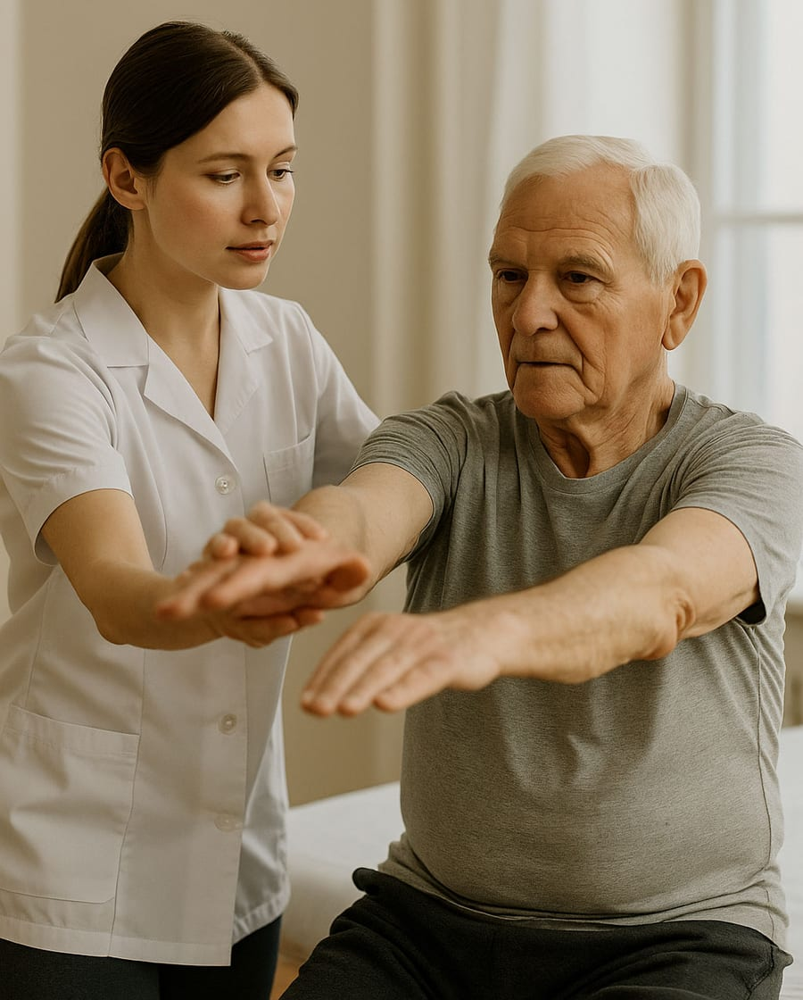
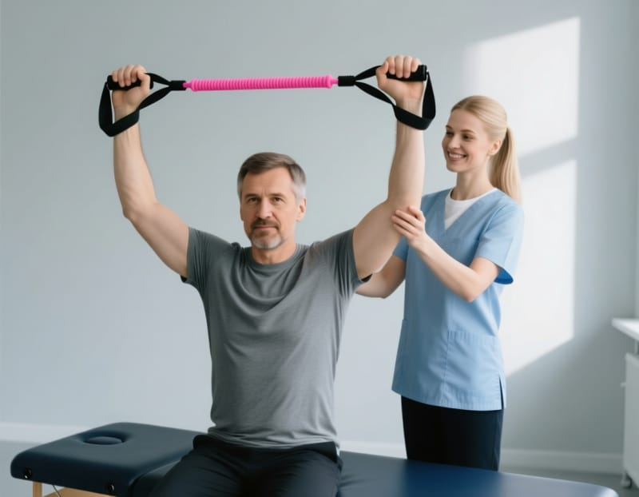

Восстановление после травм, операций и инсульта
Составим программу под вашу цель: снова ходить без трости, поднимать руку, вернуться к работе. Занятия в центре или у вас дома.
Если человек не может приехать – специалист приедет домой.

С чем вы пришли?
Выберите свою ситуацию – расскажем, что делаем и кто занимается.
Реабилитация после инсульта
Восстанавливаем ходьбу, движения руки, равновесие и самообслуживание. Чем раньше начать, тем больше можно вернуть.
- Кто занимается
- невролог, инструктор ЛФК, эрготерапевт, логопед
- Где
- в центре или на дому
Направления
У каждого направления своя страница: что делаем, кто ведёт, сколько длится и сколько стоит.
Как проходит восстановление
- КонсультацияВрач смотрит выписки, проверяет движения и вместе с вами ставит цель.
- ПрограммаПодбираем занятия, частоту и специалистов под вашу цель.
- ЗанятияВ центре или дома. Родственникам показываем, как помогать между занятиями.
- Проверка результатаРегулярно сравниваем с началом и при необходимости меняем программу.
Выезд на дом
После инсульта или операции добраться до центра бывает трудно. Тогда специалист приезжает сам и привозит всё нужное для занятий.
Заказать выезд- Занятия ЛФК и восстановление ходьбы
- Массаж
- Обучение родственников уходу и упражнениям
- Подбор трости, ходунков и опор
Цены
- Первичная консультацияосмотр, цель, план занятий
- от 2 000 ₽
- Индивидуальное занятие ЛФК45 минут
- от 1 800 ₽
- Массаж30 минут
- от 1 500 ₽
- Занятие на домус выездом специалиста
- от 3 000 ₽
В демо-версии цены условные. Цены, тексты и специалистов вы будете менять сами в редакторе сайта.
Кто с вами занимается

Запишитесь на консультацию
Оставьте телефон – перезвоним в течение рабочего дня, ответим на вопросы и подберём время.
В демо-версии заявка никуда не уходит. В рабочей версии она придёт вам в Telegram или на почту.
Контакты
- Телефон
- +7 (900) 000-00-00
- Адрес
- Город, улица, дом – адрес вашего центра
- Время работы
- Пн–Сб с 8:00 до 20:00